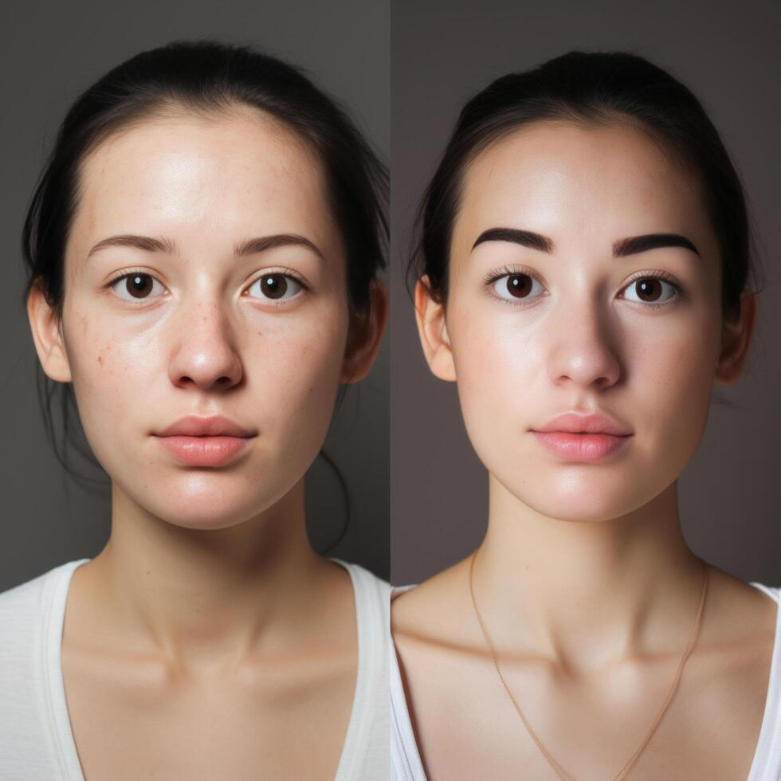
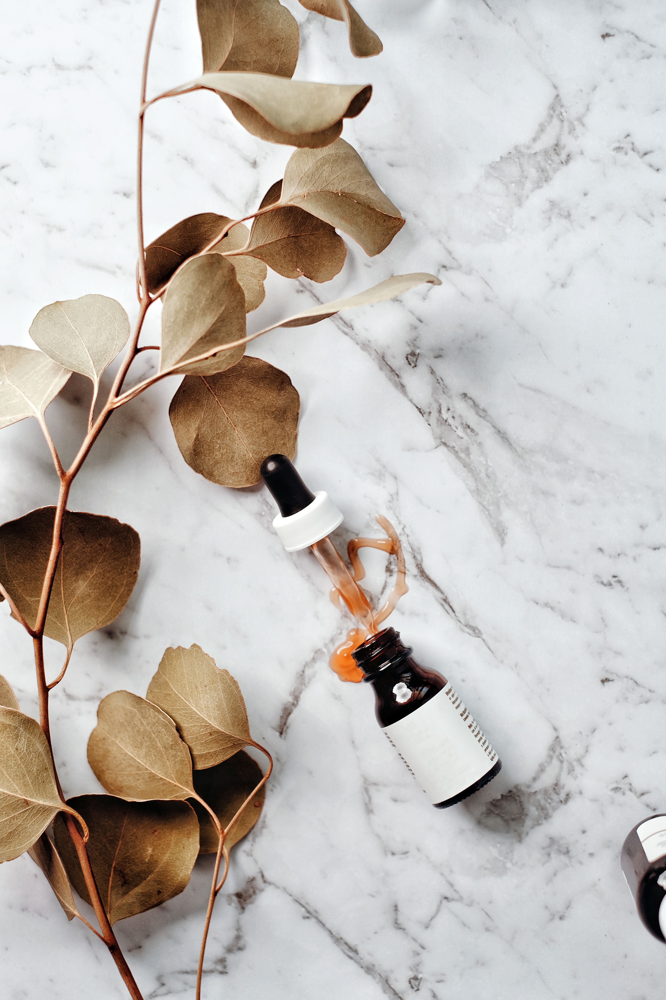

Oily Skin
Do you have oily, acne-prone skin? Does it feel greasy, attract dirt quickly, or always seem to be shining?
Do you have oily, acne-prone skin? Does it feel greasy, attract dirt quickly, or always seem to be shining?
Do you have a mix of dry and oily areas, with some parts feeling dehydrated and others feeling oily or acne-prone?
Does your skin need extra hydration and moisturizer? Does it feel worse or even crack during winter?
This line is designed for aging skin and focuses on helping reduce the appearance of wrinkles. Discover skincare created to help your skin look and feel its best.

Stress and skin are related in a number of ways, including:
Lilac Noir is proud to support sustainable beauty and health. Natural products can be effective alternatives to harsh chemicals.

Create an account to receive personalized skincare recommendations and exclusive offers.
Sign up here!